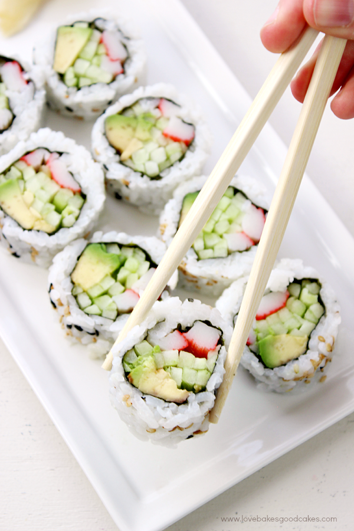

Recipe: Sushi

Description
Sushi is a classic Japanese dish with origins best described, in good comedic fashion, here.
Sushi is a notable cultural import form Japan, consisting of sticky rice stuck to a dried sheet of seaweed, rolled with seafood and vegetables to fill the roll.
Making sushi is daunting at first, and often takes many tries to master and come out with a clean looking roll. This guide will cover the basics or rolling your own roll, using a califonia roll as an example.
Sushi is very flexible and can be added in, on, or to with a variety of different ingredients and techniques! I'll cover alternate options and techniques as we go, so let's begin!
Ingredients
- 2 cups sushi rice
- 1/4 cup of rice vinegar
- 4 tsp of sugar
- 1 tsp of salt
- 3-4 nori sheets (dried seaweed)
- Crab meat (imitation, shredded, crab mix)
- Avacado
- Cucumber
- Seasame seeds or masago (optional)
Steps
- To a rice cooker, add 2 cups of sushi rice and 2 cups of water, let soak, then cook until shiny and plump
- In a small bowl, mix vinegar, sugar, and salt
- When sushi rice is done cooking, add to a large mixing bowl and spread evenly to cool. When cool, add sushi vinegar mix
- On a sushi mat or cutting board, place down nori rough side up and add rice in a thin and even coating overtop
- Flip the sheet over and add desired amounts of crab, cucumber, and avacado
- Roll by hand or with the sushi mat, making sure to firmly compress the roll while doing so to ensure a tight roll.
- Add seasame seeds or masago as a garnish over the roll
- Delacately cut and serve with soy sauce!
Return to top
Return to main page